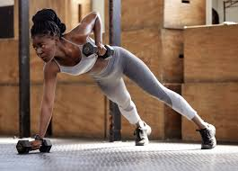

Pratiquer de l'exercice physique
Le sport est une activite tres importante pour la sante et pour etre en forme.
Beaucoup dirons qu'il sait a augmenter la masse musculaire mais aussi a avoir une meilleure sante.

Manger sainement est le facteur primordial de la sante chez l'humain .
Pour cela nous devons consommer:
nous offrons une section de divertissement a travers l'activite culinaire cuisine